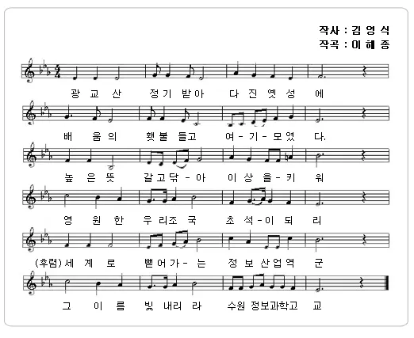

수원정보과학고등학교
2. 학교 연혁
- 1994년 11월 1일 : 교육법 제85조 및 지방 교육자치에 관한 법률 제41조의 규정에 의거 수원정보산업공업고등학교로 설립인가(전자전산과 3학급, 전자통신과 2학급, 디자인과 2학급, 정보처리과 3학급)
- 1995년 3월 1일 : 초대 허영 교장 취임
- 2003년 3월 1일 : 특수학급 1학급 설치(신입생 남4, 여6)
- 2006년 2월 7일 : 지역중심학교 예지관(禮智館) 개관
- 2008년 8월 25일 : IT분야 특성화고 지정
- 2009년 3월 1일 : 교명변경(수원정보과학고등학교)
- 2009년 3월 1일 : 디지털전자과->컴퓨터전자과, 디지털통신과->디지털네트워크과, 디자인과->캐릭터디자인과(캐릭터 디자인->IT산업디자인->디자인컨텐츠), 정보처리과->U-비즈니스과로 명칭 변경
- 2010년 9월 1일 : 제7대 김학규 교장 취임
- 2014년 3월 1일 : U-비지니스과->IT경영정보과로 명칭 변경
- 2015년 9월 1일 : 제8대 현수 교장 취임
- 2019년 3월 1일 : 제9대 여승기 교장 취임
- 2020년 3월 1일 : 고교학점제를 도입하고 혁신학교로 지정됨
- 2021년 3월 1일 : 디지털 네트워크과->스마트자동화과로 과 전체 변경
- 2021년 5월 1일 : 신관 전체 화장실 리모델링
- 2022년 3월 1일 : 제10대 위경철 교장 취임
3. 학교 상징
3.1. 교훈
근면(勤勉), 성실(誠實)
3.2. 교포
큰 타원은 화합과 결합을 의미하며, 가운 데 삼각형은 지식과 기능을 바탕으로 세계를 향해 발전해 나가는 진취적인 기상을 상징한다. 파란색 바탕은 본교의 교훈인 명칭의 머리글자인 “수”를, 가운데 자리한 “I”는 INFORMATION(정보)의 첫 글자와 공업의 머리글자인 “工”을 함께 나타내었다.
3.4. 교가
4. 학과
4.1. AI융합전자과
컴퓨터 및 전자회로의 설계, 생산, 관리에 대한 기초 지식과 실무 능력을 키워 창의적 사고를 가진 전자기기분야의 융합현 인재를 양성하는 학과이다.
4.2. 스마트자동화과
자동화 설비.공장 및 PLC 관련된 전기관련 전공을 기르고 기계를 프로그래밍하는 학과이다.
4.3. 디자인콘텐츠과
시각디자인, 제품디자인, 마케팅에 관한 기초 지식과 실무 능력을 키워 창의적 사고를 가진 디자인 분야의 융합형 인재를 양성하는 학과이다.
4.4. IT소프트웨어과
알고리즘과 프로그래밍, 소프트웨어 개발에 대한 기초 지식과 실무 능력을 키워 창의적 사고를 가진 응용소프트웨어 및 임베디드소프트웨어 개발 분야의 융합형 인재를 양성하는 학과이다.
5. 학교 시설
본관과 신관으로 나눠져 있으며 건물 여기저기에 특별실이 존재한다. 대표적으로 신관 5층에 있는 바리스타실이나 신관1층에 카페테리아가 있다. 나머지는 학과전용실이나 어학실 정도가 있다.
신관 3층 끝쪽에는 도서관이 있는데 2007년 졸업생이자 천안함 사건 피해자 정범구 병장의 모친이 모교에 책 500여 권을 기부하면서 만들어졌다.
6. 학교 생활
학생들은 9시 등교를 하며 몇몇 반은 8시 50분까지 등교하는 경우도 있다.[3] 1학년 때는 영어, 수학, 과학과 같은 일반과목 몇가지와 전문과목 몇가지를 배우며 2학년을 올라가면 더 많은 전문과목과 더 적은 일반과목을 배우며 3학년이 되면 일반과목이 사라진다.
학교가 끝나면 보통 5시로, 야간 자율학습이란 것은 없고 공기업, 공무원, 대기업 준비하는 학생들이 남아서 9시까지 공부한다.
6.1. 주요 행사
수정제 : 7월 중순에 개최하며 오전에는 각종 부스체험 노래자랑 등의 행사를 할 수 있고 오후에는 예지관(체육관)에서 장기자랑이나 댄스부 동아리의 공연을 볼 수 있다.
체육대회 : 반마다 경쟁하는 것이 아닌 4개의 학과끼리 경쟁하게 된다.
합창제 : 1~2학년 학생들이 연말 크리스마스 전 또는 후에 하는 행사로, 학과로 진행하는 체육대회와는 다르게 반 대항 행사이기도 한다.
하이큐v리그: 과나 반별로 팀을짜서 배구대회를 개최한다.
7. 이용 가능한 대중교통
7.1. 버스
7.1.1. 수원지방법원
- 수원 버스 11-1
- 수원 버스 18
- 수원 버스 20 (이상 정류장번호 04054)
- 경기광주 버스 720-3 (이상 정류장번호 04316) 아주대 입구 정류장(아주대삼거리 전 정류장)에서 내려서 조금 걸어가야한다.
7.1.2. 법원사거리
- 수원 버스 3
- 수원 버스 4-1
- 용인 버스 10
- 용인 버스 10-2
- 용인 버스 10-5
- 화성 버스 15-1
- 수원 버스 27
- 수원 버스 37
- 수원 버스 46-1
- 수원 버스 52
- 수원 버스 54
- 수원 버스 62-1
- 수원 버스 63
- 경기광주 버스 65
- 용인 버스 66
- 용인 버스 66-4
- 수원 버스 80
- 수원 버스 81
- 수원 버스 82-1
- 수원 버스 83-1
- 수원 버스 88
- 수원 버스 99
- 수원 버스 99-2
- 오산 버스 202
- 경기광주 버스 720-1
- 수원 버스 1007-1
- 수원 버스 3007
- 수원 버스 7000
- 수원 버스 7001
7.2. 철도
- 신분당선 광교중앙역